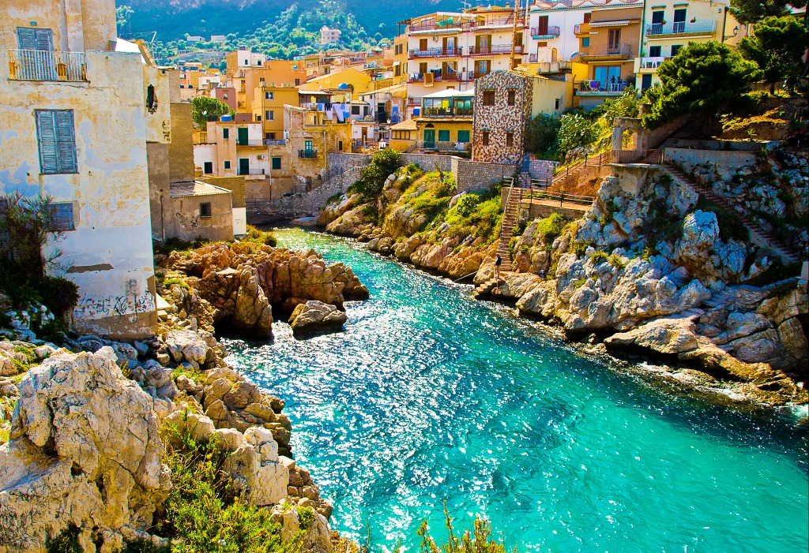
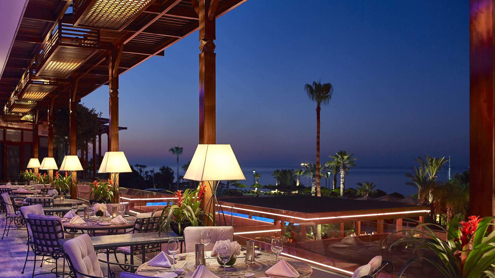

My travels
1) The first place I visited was Sicily!

Incredible island in Greece, a lot of vegetation. The transparent,
meadow-colored sea and magnificent architecture won me over. I was
satisfied with the trip and would like to return there again.I would
recommend visiting the Island of Favignana on it you can go to the
bays of Cala Rossa and Bue Marino in these bays you will see how
beautiful our land is!
2) The second places I visited were Turkey and Cyprus.

I would recommend these vacation spots for families with children or
for a relaxing holiday on the shore. In hotels, you don't think about
anything, your vacation is measured and monotonous. But every vacation
has its pros and cons. I would not recommend going on excursions,
what's there, what's there because it's useless crap. It is better to
spend money on entertainment at the hotel, for example, a parachute or
rent a yacht!